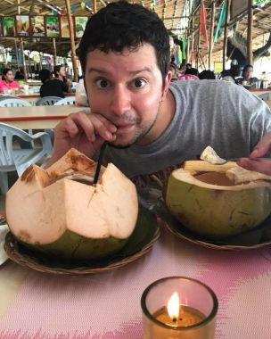

Hi there! I'm Mark Szymanski!
I am an IT student living in Chapel Hill, NC
As a former professional chef, I am looking to utilize the skills I've learned
in the kitchen to become a web developer. I have adapted a strong worth ethic
and excellent communication skills. Now I've decided to use my passion as a chef
to start a career for my other passion, software development!
Some of my interests include:
- Cooking all sorts of different food from all around the world
- Watching sports and playing fantasy sports
- Video Games
After working for a bit after high school, I attended Culinary School at Wake
Technical Community College. For eight years I worked in kitchens, working my way
up from pantry line cook, to banquet sous chef. I had a lot of great experiences in
my culinary journey, but decided it was time for a change. My passion for software
development, as well as a hope for a normal life, led me to studying at Thinkful. I
am now learning so much about software development, and hope to be a full stack
developer by the end of the year!